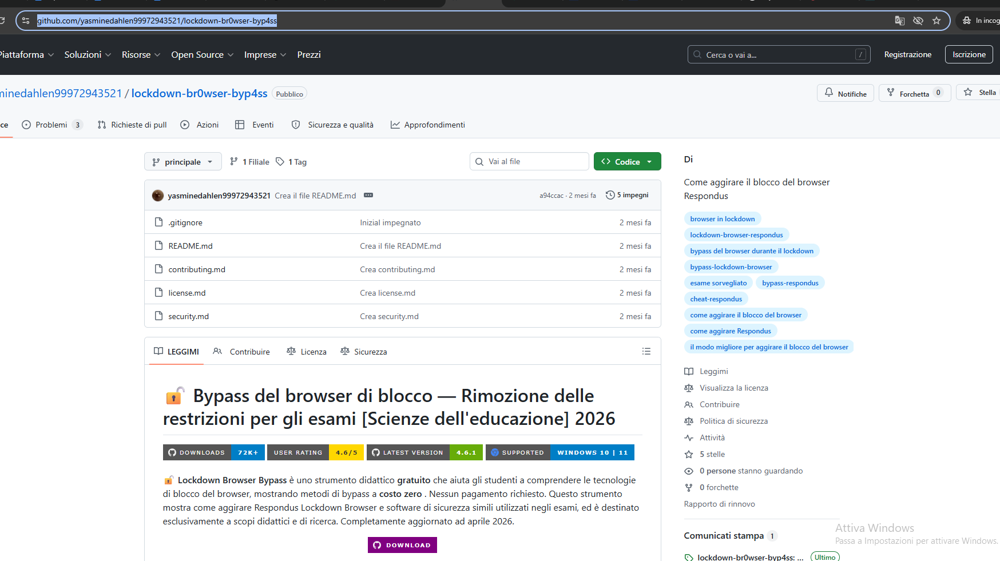
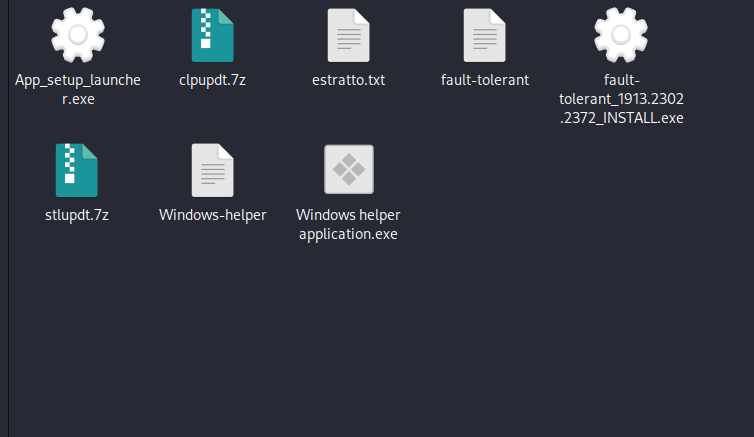
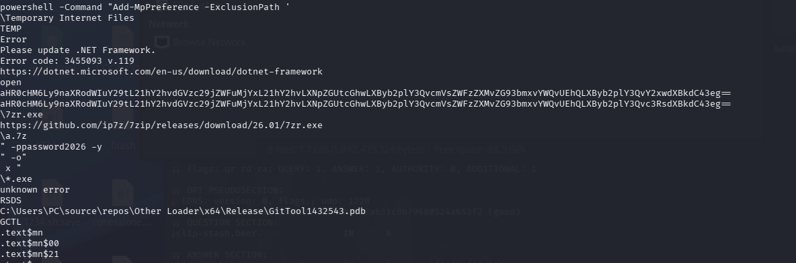
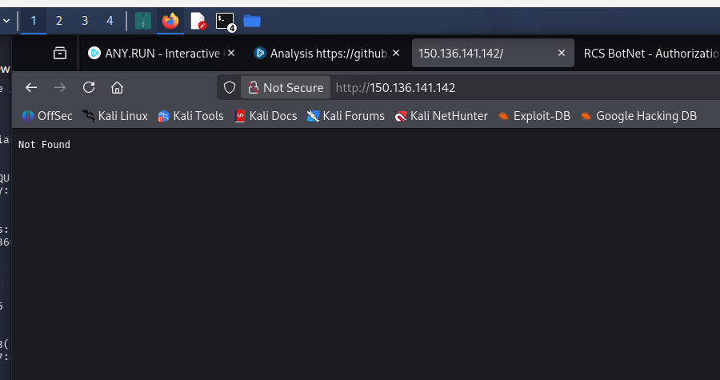
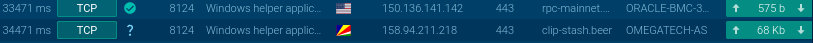
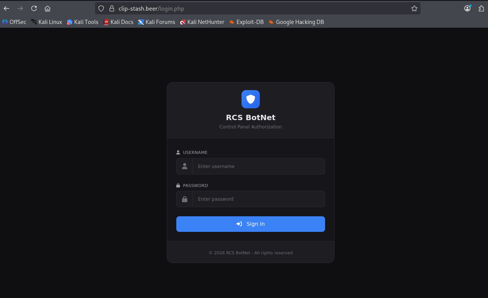
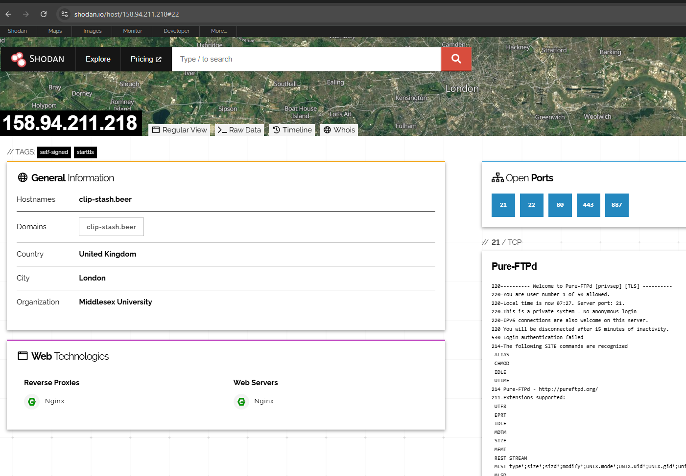

In questo report documenterò l'analisi dinamica e statica che ho condotto su un campione di malware multi-stadio altamente evasivo. La minaccia si spaccia per uno strumento utile agli studenti universitari (un falso bypass per Respondus LockDown Browser), ma nasconde un Information Stealer che sfrutta la blockchain di Polygon per individuare il proprio server Command & Control.

Prima di eseguire il campione, ho tracciato l'intera struttura dell'attacco per capire come i singoli componenti interagiscono tra loro durante l'esecuzione:

Ho individuato il punto d'origine dell'attacco in un repository GitHub fasullo. Scaricando l'archivio contenente GitTool1432543.exe, ho notato subito un'anomalia: il file pesava oltre 16 MB. Analizzandolo con un hex editor, ho confermato l'uso del Binary Padding (inserimento massivo di byte vuoti) per far fallire le scansioni degli antivirus basati sui limiti di dimensione dei file.
Appena lanciato l'eseguibile nella sandbox, il programma ha mostrato un messaggio di errore fasullo legato a .NET Framework. Monitorando i processi con Process Monitor, ho notato che mentre l'utente vede la finestra d'errore, in background viene avviata la routine di decodifica di comandi cifrati in Base64 per nascondere gli URL reali degli step successivi.
Fase 3: Evasione Defender e PersistenzaContinuando il tracciamento, ho isolato l'invocazione di PowerShell che il malware usa per disattivare le difese e garantirsi la ripartenza al boot:

Il malware esegue Add-MpPreference -ExclusionPath sulla cartella AppData\Local\Temp e crea un collegamento .lnk nella cartella di Esecuzione Automatica.
Invece di scaricare direttamente l'eseguibile malevolo scoprendo le carte, ho osservato che il loader forza msedge.exe a scaricare 7zr.exe (l'utility ufficiale e pulita di 7-Zip). Successivamente scarica due archivi protetti da password (clpupdt.7z e stlupdt.7z) e li estrae in Temp usando la password password2026 via riga di comando.
Durante l'esecuzione di fault-tolerant_INSTALL.exe (compilato in Delphi), ho confermato l'iniezione tramite Process Hollowing all'interno di un processo di sistema legittimo. L'Infostealer vero e proprio sfrutta quindi le DLL di sistema crypt32.dll per estrarre le chiavi master DPAPI di Windows, copiando i dati di login dei browser Chrome, Edge ed Opera.
Catturando il traffico outbound con Wireshark, ho notato che il malware inviava una richiesta HTTPS verso la Blockchain di Polygon (rpc-mainnet.matic.quiknode.pro). Questa tecnica (EtherHiding) legge uno Smart Contract pubblico contenente l'indirizzo IP aggiornato del server C2, rendendo impossibile per i ricercatori abbattere la chiamata di risoluzione.

L'IP ottenuto puntava prima a un server web aziendale violato (150.136.141.142) usato dagli attaccanti come Reverse Proxy per nascondere la reale destinazione. Ho analizzato i pacchetti HTTP/HTTPS inviati:

Il proxy inoltrava infine i dati alla centrale operativa della RCS BotNet (158.94.211.218 / clip-stash.beer):

Eseguendo una scansione mirata sull'IP finale del Command & Control (158.94.211.218), ho riscontrato le seguenti porte aperte:

| Porta | Servizio | Dettaglio Analisi |
|---|---|---|
| 21 / 22 | FTP / SSH | Usate dagli operatori per caricare configurazioni e prelevare i log. |
| 80 / 443 | HTTP / HTTPS | Interfaccia web del pannello RCS BotNet ed esfiltrazione dati. |
| 887 | Custom Service | Canale C2 non standard per evitare l'indicizzazione su Shodan. |
Raccolgo di seguito tutti gli indicatori rilevati durante la mia analisi per consentire ai SOC Analyst di aggiornare le proprie regole di blocco:
| Tipo | Valore / Indicatore |
|---|---|
| SHA-256 (Injector) | 2a121317bb46959621a03ad1af31e13305ddba85db33760c47d4d68de410e60d |
| SHA-256 (Stealer) | 9c6bab4837e0b72c0780ef199f0eaa9336dcd9b8b83ec5a5938a4b79e6ca381c |
| IP Proxy Compromesso | 150.136.141.142 |
| IP C2 Finale | 158.94.211.218 (Dominio: clip-stash.beer) |